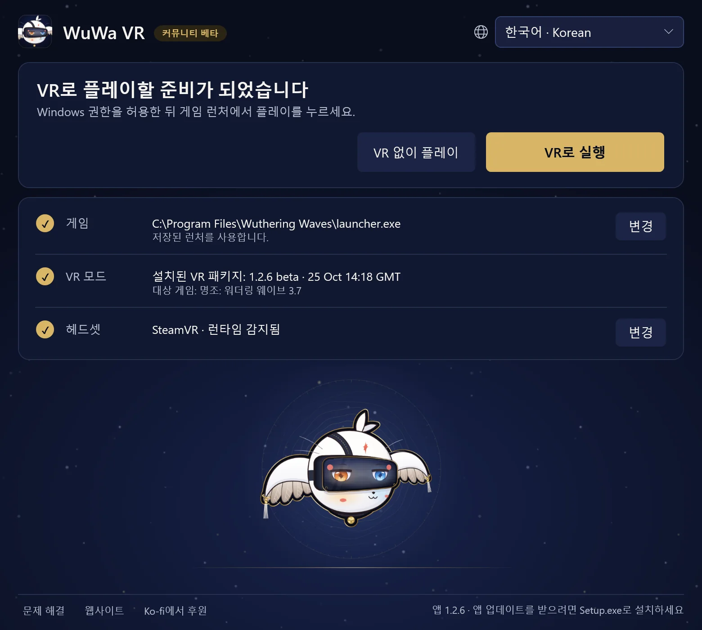

가이드1.2.7 플레이어 가이드 · 명조: 워더링 웨이브 3.8 · Windows PCVR
VR에서 WuWa 플레이하기
WuWa-VR-Setup.exe를 설치한 뒤, WuWa VR 바로가기를 엽니다. Python을 별도로 설치할 필요는 없습니다. 처음 VR 패키지를 설치할 때는 인터넷 연결이 필요하며, Setup의 작은 다운로드 파일에는 런처 앱이 포함되어 있습니다.
설치와 실행
런처는 한 화면입니다. 제목이 다음에 할 일을 알려 주고, 그 아래에 VR로 실행, VR 없이 플레이, 그리고 게임, VR 모드, 헤드셋 세 줄이 있습니다. 선택은 기억되므로 다음부터는 바로 VR로 실행할 수 있습니다.
- 게임에는 찾은 Steam 또는 공식 Kuro 런처 설치본이 표시됩니다. 다른 설치본을 고르려면 변경을 사용하세요. Steam이라면 내부의 Shipping 실행 파일이 아닌
Wuthering Waves.exe를 선택해야 합니다. Epic은 아직 지원하지 않습니다. - VR 모드에는 설치된 패키지와 그 대상 게임 버전이 표시됩니다. 처음에는 계정 위험 안내를 읽고 VR 설치를 선택하세요. 패키지는 설치 전에 검증되며, 설치해도 게임은 시작되지 않습니다.
- 헤드셋에는 사용 중인 OpenXR 런타임이 표시되므로 먼저 헤드셋 소프트웨어를 시작하세요. 변경을 누르면 헤드셋 사용과 포함된 시뮬레이터 사용(데스크톱 미리보기)이 열립니다. 전환할 때 Windows 권한을 요청할 수 있으며, 게임과 인젝터가 닫혀 있어야 합니다. 런처를 열거나 설치하거나 업데이트하는 것만으로는 절대 전환되지 않습니다.
런처 앱은 이 데스크톱 창입니다. VR 패키지는 모드와 그 도구들을 포함합니다. 둘 중 하나를 업데이트해도 다른 쪽은 자동으로 업데이트되지 않습니다.


VR로 실행을 선택하세요. 진행에 따라 네 단계가 차례로 켜집니다: 권한(Windows 확인 창에서 "예" 선택), 플레이 누르기(Kuro 런처에서; Steam은 게임을 자동으로 시작합니다), VR 시작 중(보통 1분 이내), VR 중.
VR에 들어가면 런처에 이 창은 닫아도 됩니다. VR은 계속 실행됩니다.라고 표시됩니다. VR 시작이 평소보다 오래 걸리면 그 사실과 자세한 내용을 보여 줍니다. 기다리지 않기는 대기를 취소하지만 게임을 닫지는 않습니다.
VR 없이 플레이는 같은 게임을 모드 없이 평소처럼 시작합니다.
일반적인 조작법
Xbox / XInput이 일반적인 플레이 방식입니다. L3 / R3은 왼쪽 / 오른쪽 스틱 누르기를 뜻합니다. 잘 모르겠다면? L3, 또는 LT + RT를 0.5초 동안 누르세요: 시야 아래에 카드가 올라와 각 버튼의 기능을 보여 주고, 누를 때마다 해당 버튼이 켜집니다. 단축키 사이에는 버튼을 놓으세요. 아래 표는 모든 단축키를 카드와 같은 묶음으로 보여 줍니다.

- LT포털 창
- LBHUD / 마우스 모드
- View1인칭
- 방향 패드 ↓1인칭: 전체 애니메이션
- RT디오라마 (10×)
- RB게임 / 고정 카메라
- Menu이 카드 열어두기
- Y/X카메라 상하
- B게임 UI 표시 / 숨김
- A시점 재정렬
- R3WuWa VR 메뉴
제스처
- R3×2자유 카메라
- L3×2스크린샷
- LT+RT→R3클릭: 전체 VR / 입체 화면
- LT+RT→R30.8 s길게: 모노 시어터 켜기 / 끄기
- LT+RT→L3클릭: 블러 켜기 / 끄기
- LT+RT→Y누르기: 눈앞의 캐릭터 숨기기
chronohaxx.github.io/wuwa-vr
PlayStation 지원은 실험 기능입니다.
모든 단축키
L3 길게 누르기
| L3+LT | 포털 창 |
|---|---|
| L3+LB | HUD / 마우스 모드 |
| L3+View | 1인칭 |
| L3+방향 패드 아래 | 1인칭: 전체 애니메이션 |
| L3+RT | 디오라마 (10×) |
| L3+RB | 게임 / 고정 카메라 |
| L3+Menu | 이 카드 열어두기 |
| L3+Y/X | 카메라 상하 |
| L3+Y/X | 스토리 카메라: 가까이 / 뒤로 |
| L3+Y+X | Y + X 동시에: 기본값으로 |
| L3+B | 게임 UI 표시 / 숨김 |
| L3+A | 시점 재정렬 |
| L3+R3 | WuWa VR 메뉴 |
| R3×2 | 자유 카메라 |
| L3×2 | 스크린샷 |
LT + RT 길게 누르기
| LT+RT→R3 | 클릭: 전체 VR / 입체 화면 |
|---|---|
| LT+RT→R30.8 s | 길게: 모노 시어터 켜기 / 끄기 |
| LT+RT→L3 | 클릭: 블러 켜기 / 끄기 |
| LT+RT→L30.8 s | 입체 화면 켜기 / 끄기 (0.8초 길게) |
| LT+RT→Y | 누르기: 눈앞의 캐릭터 숨기기 |
카메라
| LB+LT/RT | 고정: 멀리 / 가까이 |
|---|---|
| RB 길게 누르기 | Polar 걷기 사용 중 전속력 |
| 자유 카메라 사용 중 R3×2 | |
| 왼쪽 / 오른쪽 스틱 | 자유 카메라: 이동 / 둘러보기 |
| LT/LB | 자유 카메라: 상승 / 하강 |
| RT / RT 두 번 | 자유 카메라: 부스트 / 터보 |
메뉴 & HUD
| LB+R3 | V 한 번, 0.8초 누르면 Tab 휠 |
|---|---|
| HUD / 마우스 모드 사용 중 L3+LB | |
| 왼쪽 스틱 | 커서 이동 |
| A/B | 클릭 / 뒤로 |
| X+왼쪽 스틱 | 스크롤 |
| 방향 패드 | 지도 이동 |
| LT/RT | HUD 가까이 / 멀리 |
| LB/RB | HUD 아래 / 위 |
WuWa VR 메뉴
| L3+R3 | WuWa VR 메뉴 열기 / 닫기 |
|---|---|
| WuWa VR 메뉴가 열려 있을 때 L3+R3 | |
| 방향 패드 / A / B | 이동 / 실행 / 뒤로 |
| LB/RB | 페이지 변경 |
| Y | 메뉴 이동 |
키보드 & 마우스
| VR 키 | 1 왼쪽 키를 누른 채 다른 키를 누르세요 |
|---|---|
| VR 키+1 | 전체 VR / 입체 화면 |
| VR 키+2 | 모노 극장 |
| VR 키+3 | 포털 창 |
| VR 키+4 | 디오라마 (10×) |
| VR 키+B | 블러 (피사계 심도) |
| VR 키+N | 눈앞의 캐릭터 숨기기 |
| VR 키+H | 게임 UI 표시 / 숨김 |
| VR 키+R | 시점 재정렬 |
| VR 키+P | 스크린샷 |
| VR 키+F | 1인칭 |
| VR 키+T | 게임 / 고정 카메라 |
| VR 키+C | 자유 카메라 |
| VR 키+G | 1인칭: 전체 애니메이션 |
| VR 키+E/Q | 카메라 상하 |
| VR 키+E+Q | E + Q 동시에: 기본값으로 |
| VR 키+휠 | 고정 카메라 가까이 / 멀리 |
| VR 키+M | HUD / 마우스 모드 |
| VR 키+K | 이 카드 열어두기 |
| Insert | WuWa VR 메뉴 열기 / 닫기 |
| 자유 카메라 사용 중 VR 키+C | |
| WASD/마우스 | 자유 카메라: 이동 / 둘러보기 |
| 스페이스/Ctrl | 자유 카메라: 상승 / 하강 |
| Shift/Shift×2 | 자유 카메라: 부스트 / 터보 |
키보드와 마우스: Insert로 메뉴를 열고 닫습니다. 전체 VR에서는 게임 메뉴 위에 마우스 위치를 화살표가 보여 주며, 컨트롤러를 쓰면 숨겨집니다. 게임 창이 앞에 있는 동안 마우스는 창 안에 머뭅니다. 메뉴의 편안함 페이지에서 마우스를 게임 창 안에 두기를 끌 수 있습니다.
PS4 / PS5: Steam Input 또는 작동하는 다른 Xbox / XInput 매핑에서도 동일한 단축키를 사용합니다. Cross / Circle / Square / Triangle은 A / B / X / Y이고, L1 / R1은 LB / RB, L2 / R2는 LT / RT, Share / Create는 View, Options는 Menu입니다. 실험적인 직접 DualShock 4 및 DualSense 입력도 XInput 패드가 활성화되지 않았을 때 작동하지만, 게임이 동일한 버튼에 반응할 수 있습니다. 전체 참조를 확인하세요.
WuWa VR 메뉴의 보기 페이지에 시점, 흐림, 클로즈업 옵션이 있습니다. 자동 시네마틱 화면은 켜져 있습니다: 스토리 영상은 모노 시어터로, 스토리 그림은 입체 화면으로 바뀌었다가 원래 시점으로 돌아옵니다. 대화는 선택한 시점을 유지합니다. 시점 단축키는 언제든 쓸 수 있습니다.
VR 컨트롤러로 걷기, 디오라마와 손 데모 (선택 사항)
VR 컨트롤러(홈 및 조작 페이지)를 켜면 Quest 컨트롤러를 Xbox 패드처럼 걷기와 구경에 쓸 수 있습니다. 실행할 때마다 꺼진 상태로 시작합니다. 왼쪽 Menu 버튼을 1초 동안 누르면 켜고 끌 수 있습니다(진동으로 확인). 짧게 누르면 그대로 Start입니다. Menu 버튼이 없는 경우(Index) 꺼져 있을 때 두 스틱을 함께 1초 동안 누르세요. VR 컨트롤러를 쓰면 카드에 그립, 트리거, 스틱 이름이 표시됩니다.
Xbox / 트레드밀과 공유 설정은 기억됩니다: 둘 다 함께(기본값, 트레드밀 걷기 계속 작동), 마지막 사용 우선, VR만. 컨트롤러 슬롯은 기본값이 자동으로, Reality Runner의 가상 패드처럼 컨트롤러가 있는 슬롯을 사용합니다. 둘 다 WuWa VR 메뉴의 조작 페이지에 있으며, 트레드밀 러닝도 함께 있습니다. Reality Runner가 열려 있으면 걷기만 해도 러닝이 시작되어 시간을 재고 게임 속 경로를 저장합니다. 걷기 참조를 확인하세요.
디오라마는 Native Stereo가 필요하며 월드 스케일에 맞춰 머리 움직임이 커집니다. 끄면 원래 스케일로 돌아옵니다. 카메라 페이지의 디오라마 배율로 크기를 정합니다(2×~10×). 손 / 손가락 데모는 표시만 하며 잡기나 제스처는 없습니다.
업데이트 및 롤백
앱의 새 버전이 있으면 런처가 알려 줍니다. 업데이트한 뒤 아무것도 실행 중이지 않을 때 다시 시작하세요. 게임이 닫힌 상태로 앱을 시작하면 같은 게임 버전용 새 VR 패키지를 자동으로 설치하며, 기존 패키지도 설치된 상태로 남습니다. 문제 해결 → 추가 옵션에는 설치된 버전과 게시된 버전, 업데이트 확인이 있습니다. 업데이트 확인이 실패하거나 목록이 캐시되어 있다고 해서 패키지가 최신이라는 뜻은 아닙니다.
이번 릴리스는 앱 1.2.7과 패키지 beta-1-2-7의 조합이며 WuWa 3.8용입니다. VR 패키지 업데이트를 되돌리려면 게임을 닫은 뒤 문제 해결 → 추가 옵션에서 이전에 설치한 버전 사용을 사용하세요. 런처 앱은 되돌려지지 않습니다. 설정, 백업, 녹화본은 유지됩니다.
런처 앱 업데이트가 차단되는 경우, 웹사이트의 최신 Setup을 사용하세요. 재설치만으로는 멈춘 백그라운드 작업이 종료되지 않으므로, 먼저 아래의 복구 단계를 시도해 주세요.
포터블 대체 버전
해당 릴리스에서 WuWa-VR-Launcher.zip을 다운로드한 뒤, 모든 파일을 압축 해제하고 WuWa VR Launcher.exe를 실행하세요. 폴더들은 함께 유지해야 합니다. 이 버전은 별도의 웹 도구 인터페이스를 열며, 설치된 데스크톱 런처 앱을 업데이트하지 않습니다.
문제가 발생하면
런처 아래쪽의 문제 해결을 열고 위에서부터 차례로 시도하세요. 모드 파일 복구는 검증된 사본에서 모드 파일을 다시 설치하며 설정은 유지합니다. 모드 설정 초기화는 내 설정을 백업한 뒤 모드 설정을 배포 당시 상태로 되돌립니다. 문제 보고서 저장은 로그와 설정을 Windows 사용자 이름 없이 zip 하나로 묶어 바탕 화면에 저장합니다. 도움을 요청할 때 보내 주세요.
추가 옵션에는 나머지 기능이 있습니다: 컨트롤러 확인, 실행 준비 확인, 진단 정보 복사, 설정 폴더 열기, 설치된 버전, 멈춘 런처 프로세스, 제거 준비.
- 시작이 멈췄을 때: 기다리지 않기를 사용하고 최대 4초 기다리세요. 시작이 멈췄는지 런처가 확인하지 못하면 멈춘 런처 프로세스를 보여 줍니다. 멈춘 런처 프로세스 찾기를 선택하고 멈추려는 작업 프로세스만 고른 뒤 선택 항목 중지를 확인하세요. 미리 선택된 것은 없습니다. 그다음 연결 다시 시도를 선택하세요.
- 닫히지 않음: 런처만 닫기는 창만 닫고 백그라운드 작업은 그대로 둡니다. 복구 기능은 WuWa, Steam, 인젝터 또는 VR 런타임을 절대 중지하지 않습니다.
- 컨트롤러 없음: 컨트롤러 확인은 설정을 변경하지 않고 XInput 슬롯과 HidHide 정보를 읽습니다. 슬롯이 연결되어 있다고 해서 게임이 버튼을 받는다는 보장은 없습니다.
- HUD나 메뉴가 이상할 때: WuWa VR 메뉴의 인터페이스 페이지에 HUD 레이아웃 새로 고침이 있습니다. ESC를 열었다 닫아도 HUD가 다시 배치됩니다. HUD와 메뉴는 일반 게임과 같은 16:9 레이아웃을 씁니다. 같은 페이지의 16:9 UI 레이아웃으로 예전의 세로로 긴 레이아웃으로 바꿀 수 있습니다. L3 + B로 숨긴 게임 UI를 다시 표시합니다.
- 메뉴가 보이지 않을 때: 메뉴 설정과 관계없이 Ctrl+Shift+Home은 WuWa VR 메뉴를, Ctrl+Shift+End는 클래식 UEVR 창을 엽니다.
- 문제 신고: WuWa VR 메뉴의 녹화 페이지에서 무엇이 잘못되었는지 고르고 보고서 저장을 선택하세요. 런처에서는 문제 보고서 저장을 사용하세요. 앱과 VR 패키지 버전, 발생한 상황, 녹화본이 있다면 함께 이슈에 첨부해 주세요.
다운로드한 버전 제거 또는 앱 삭제
문제 해결 → 추가 옵션 → 제거 준비는 먼저 UEVR 설정을 모드 이전 상태로 되돌리고(모드 설정은 먼저 백업됩니다), 확인 후 아무것도 실행 중이지 않을 때 검증된 다운로드를 삭제합니다. 그다음 Windows 설정 → 앱에서 앱을 제거하세요. 게임, 백업, 녹화본, 사용 중인 OpenXR 패키지, 사용 중이거나 검증되지 않은 파일은 남습니다. 다시 설치해도 멈춘 백그라운드 작업 프로세스는 중지되지 않습니다.
녹화 및 현재 제한 사항
녹화는 WuWa VR 메뉴(동영상 녹화) 또는 문제 해결 → 추가 옵션의 개발자 도구에서 시작하고 멈출 수 있습니다. 녹화는 SteamVR과 포함된 시뮬레이터에서 작동하며 VDXR은 지원하지 않습니다. SteamVR에서는 게임 소리와 마이크도 녹음할 수 있습니다. 녹화 중에는 플레이어 ID가 가려집니다. 공유하기 전에 영상에 이름이나 계정 정보가 없는지 확인하세요. 피드백 가이드를 참고하세요.
이번 릴리스에서 테스트한 내용과 알려진 제한은 릴리스 노트에 있습니다. 알려진 문제: 전체 VR에서 퀘스트 표식이 목표보다 약간 아래에 있음, 캐릭터 화면의 아이콘이 납작해 보임(바닥 반사를 계속 갱신하려고 세로로 긴 레이아웃을 씀), 평면 메뉴 배경이 움직임, 장면이나 대화가 오래 멈춤. 모노 시어터가 일부 메뉴와 컷신에 도움이 됩니다.